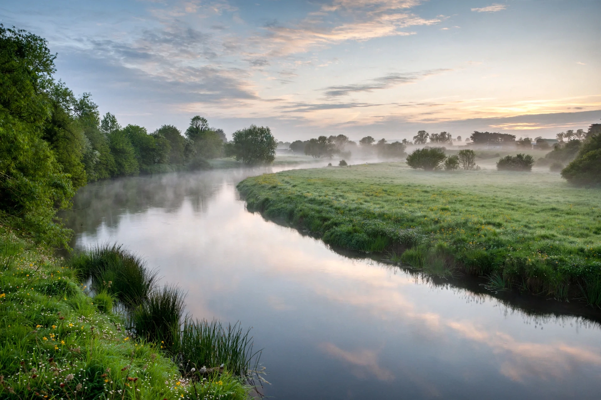

From Wikipedia, the free encyclopedia
| Boann | |
|---|---|
 The River Boyne, named for Boann | |
| Mythology | Irish (Celtic) |
| Domain | River Boyne, poetry and inspiration |
| Consort | Nechtan; the Dagda |
| Offspring | Aengus (Óengus) |
Boann (modern Irish Bóinn) is the goddess of the River Boyne in Irish mythology. According to the Lebor Gabála Érenn and the metrical Dindsenchas, she is the wife of Nechtan and the mother, by the Dagda, of the love god Aengus. The river and its mythology are closely tied to the great Neolithic passage tombs of Brú na Bóinne, including Newgrange.
In the best-known tale, Boann approached the forbidden Well of Segais, which only Nechtan and his cupbearers were permitted to visit, and where hazelnuts of knowledge dropped into the water. She walked around the well counter to the sun (widdershins), defying its taboo; the waters rose violently, pursued her to the sea, and maimed — in some versions drowned — her, becoming the River Boyne. From the pieces of her drowned lapdog, Dabilla, the story also explains the name of the River Dabhla. The myth links Boann with poetic inspiration, since drinking from the well or river conferred supernatural knowledge, a theme shared with the salmon of knowledge.
Her name is generally interpreted as "white cow" (from Old Irish bo, cow, and find, white/fair), reflecting the river's milky-white, life-giving aspect; the Boyne's name, Bóinn, is derived from hers.